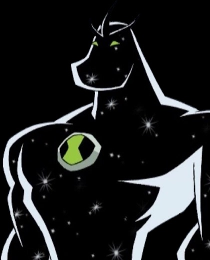
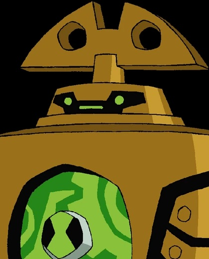
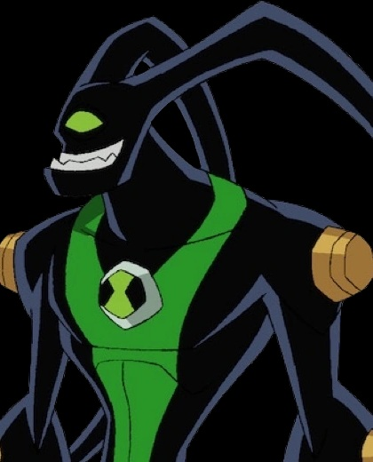
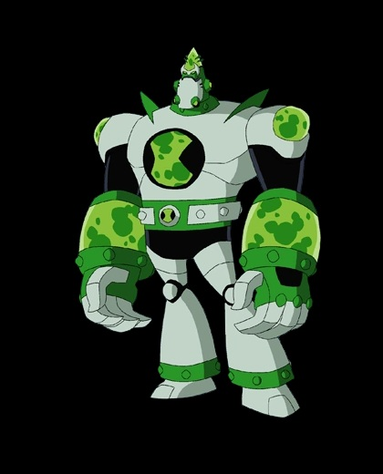
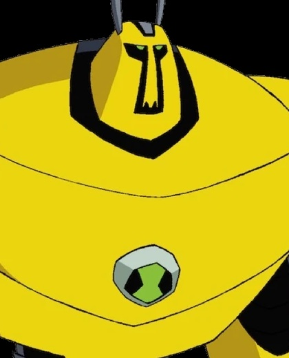
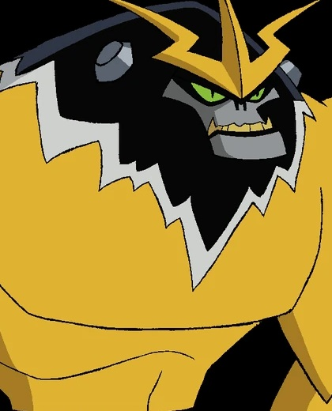

7 najlepszych kosmitów Ben 10
☰ Menu
Główna
Obcy X
Clockwork
Feedback
Atomix
Way Big
Armowiertło
Shocksquatch
Ankieta
Miejsce powstania Ben 10
Galeria kosmitów
1 / 7

Obcy X
2 / 7

Clockwork
3 / 7

Feedback
4 / 7

Atomix
5 / 7
Way Big
6 / 7

Armowiertło
7 / 7

Shocksquatch
Miejsce w którym powstał Ben 10